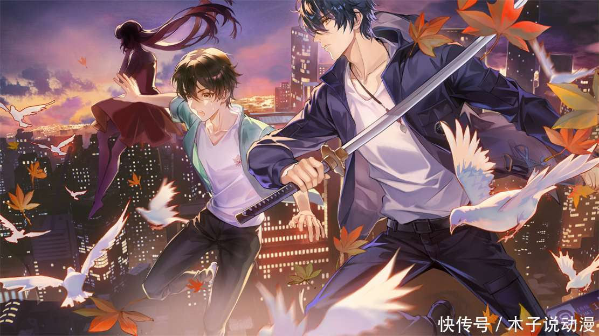

1. 作品质量认可：许多读者认为《龙族》是一部难得一遇的好作品，尽管它商业性浓厚，但文笔、剧情挑逗和环境描绘都是顶级的。
2. 情感共鸣：读者们在《龙族》中找到了自己的影子，它不仅是一本书，也是他们青春的一部分。
3. 人物塑造：《龙族》中的人物形象鲜明，作者通过各种事件的描写，让人物形象跃然纸上，给读者留下深刻印象。
4. 世界观构建：《龙族》构建了一个基于神话故事和历史传说的宏伟世界，这个世界神秘而瑰丽，深深刺激着读者的想象。
5. 文化融合：《龙族》将中国神话、北欧神话以及日本文化等多种元素融合在一起，形成了一个独立的世界体系，这是非常难做到的事情。
6. 梦想与现实：《龙族》被认为是关于梦想的文学，它提供了一个不同于现实的世界，让读者能够实现内在的梦想。
7. 成长与挑战：《龙族》描绘了年轻人在成长中的迷茫，以及在面对人生挑战时的勇气和自信。
8. 情感投入：有读者对某些角色（如绘梨衣）有特别的情感投入，希望在同人作品中看到她与原创主角成为一对CP。
9. 现实感：《龙族》被认为比其他网络小说更贴近现实，角色们都有自己的一生，而不是仅仅为了成就主角而活。
10. 文学价值：《龙族》被一些著名作家和评论家赞赏，认为它具有史诗般的气质，想象令人惊叹。
11. 世界观架构问题：有读者认为从《龙族3》开始，作者江南表现出撑不起大世界观架构的趋势，导致世界观架构不是特别统一，没有凌驾于分支作品逻辑之上的统一逻辑。
12. 更新问题：有读者提到江南不更新，导致故事太监，即没有完成。有观点认为江南可能因为健康问题（如抑郁症）和写作方式的转变（从实体书转向网络连载）导致创作能力受到影响。
13. 剧情争议：读者对剧情设计有广泛争议，特别是战斗力崩坏、情节跳脱等问题，导致江南与部分黑粉产生冲突，给创作增添了额外的压力。
14. 角色成长问题：有读者指出，主角路明非在《龙族》系列中的成长接近于没有，尤其是在《龙族》一到《龙族》五这十年间（剧情内四年）。
15. 情感投入与现实接受：有读者将《龙族》与自己的青春联系起来，虽然对作品的质量感到失望，但仍然难以割舍，因为《龙族》陪伴了他们的成长。
16. 商业与艺术的冲突：有观点认为江南可能更多地关注商业利益，而忽视了艺术创作，导致作品质量下降。